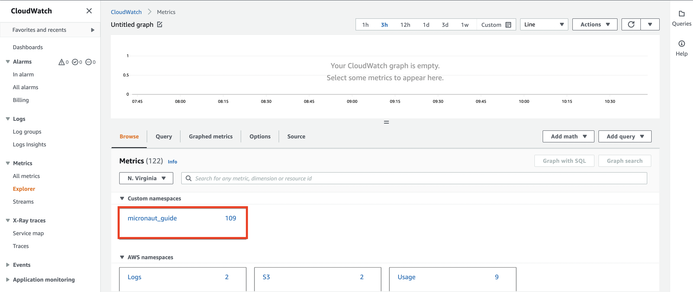
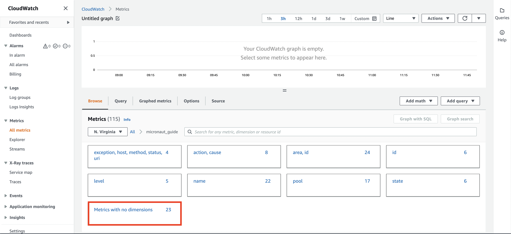
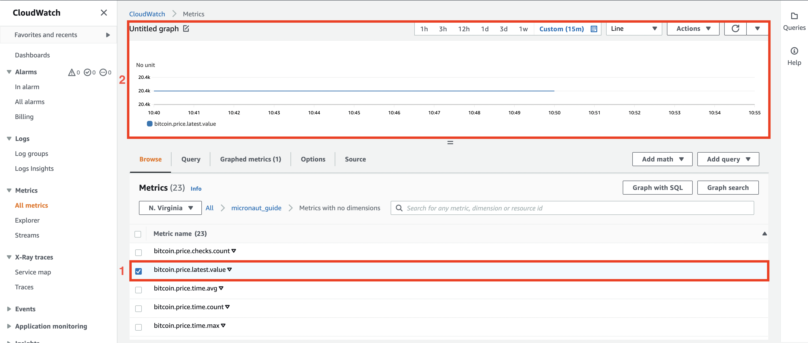

Collect metrics with the Micronaut framework and monitor them on Amazon CloudWatch
Learn how to collect standard and custom metrics with the Micronaut framework and monitor them on Amazon CloudWatch.
On this guide
In this section
Getting Started
In this guide, we will create a Micronaut application written in Kotlin.
We’ll use Micronaut Micrometer to expose application metric data with Micrometer.
What you will need
To complete this guide, you will need the following:
-
Some time on your hands
-
A decent text editor or IDE (e.g. IntelliJ IDEA)
-
JDK 21 or greater installed with
JAVA_HOMEconfigured appropriately
Amazon Web Services (AWS)
If you don’t have one already, create an AWS Account.
AWS CLI
Follow the AWS documentation for installing or updating the latest version of the AWS CLI.
Administrator IAM user
Instead of using your AWS root account, it is recommended that you use an IAM administrative user. If you don’t have one already, follow the steps below to create one:
aws iam create-group --group-name Administrators
aws iam create-user --user-name Administrator
aws iam add-user-to-group --user-name Administrator --group-name Administrators
aws iam attach-group-policy --group-name Administrators --policy-arn $(aws iam list-policies --query 'Policies[?PolicyName==`AdministratorAccess`].{ARN:Arn}' --output text)
aws iam create-access-key --user-name AdministratorThen, run aws configure to configure your AWS CLI to use the Administrator IAM user just created.
The Application
Download the complete solution of the Collect Metrics with Micronaut guide. You will use the sample application as a starting point.
Monitor metrics on Amazon CloudWatch
To publish metrics to Amazon CloudWatch, you have to adjust your application configuration slightly, and then you will be able to create queries and monitor your metrics on CloudWatch.
Visit the Amazon CloudWatch Metrics.
In the Metrics panel, select the namespace that you chose earlier. We select micronautguide.

Here you can browse different metrics and explore their values. In this example, we want to check the price of Bitcoin. Select Metrics with no dimensions.

In this panel, you can see our custom metrics about Bitcoin. Select (#2) bitcoin.price.latest.value to see on graph (#1) how the price of Bitcoin changed over time.

Next Steps
Explore more features with Micronaut Guides.
Read about Amazon CloudWatch.
Help with the Micronaut Framework
The Micronaut Foundation sponsored the creation of this Guide. A variety of consulting and support services are available.
License
| All guides are released with an Apache License 2.0 for the code and a Creative Commons Attribution 4.0 license for the writing and media (images). |